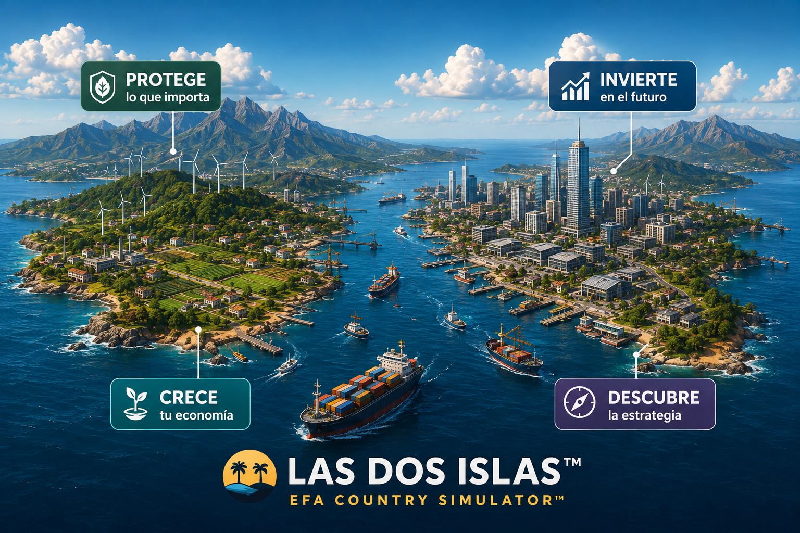

Una experiencia interactiva de estrategia económica basada en EFA — Estrategias de Flujo Adaptativo.
▶ JUGAR AHORA
Impuestos, gasto, salarios, inversión, comercio y libertad empresarial.
PIB, productividad, empleo, inflación, salario real, deuda y más.
La restricción dominante puede desplazarse cuando actúas.
Una política que funciona hoy puede dejar de funcionar mañana.
Mide flujo, crecimiento, bienestar, resiliencia y adaptación.
Elige tus políticas.
Mira los resultados.
Identifica la restricción.
Cambia cuando cambie la restricción.
Mejora tu EFA SCORE™.
Un estrecho marítimo o una zona portuaria queda fuera de operación.
Sequía, clima o escasez mundial encarece la energía.
Una emergencia obliga a reconstruir infraestructura.
Una desaceleración mundial reduce la demanda externa.
Una emergencia sanitaria altera la capacidad productiva.
El desafío no es predecir el futuro. Es adaptarte cuando llega.
Un modelo para tomar decisiones en sistemas complejos cuando las condiciones cambian.
Identifica qué está frenando el flujo, actúa sobre esa restricción, protege el sistema y adáptate cuando la restricción cambie.
No necesitas conocer EFA para jugar. El simulador te permite descubrir sus principios mediante la experiencia.
Si quieres profundizar, puedes conocer Introducción a las Estrategias de Flujo Adaptativo, de Andrés Correa Zapata.
El libro no es requisito para jugar.
Una forma práctica de explorar economía, restricciones, productividad, inflación, inversión, comercio y resiliencia.
Una herramienta para discutir decisiones económicas, consecuencias no intencionales y adaptación en sistemas complejos.
EFA University Starter Kit — próximamente.
Lleva tu país al siguiente nivel de desarrollo.
🔒 PRÓXIMAMENTECompite en un mundo geoeconómico complejo.
🔒 PRÓXIMAMENTENo necesitas ser economista. No necesitas conocer EFA. Solo necesitas tomar decisiones.
▶ JUGAR AHORA